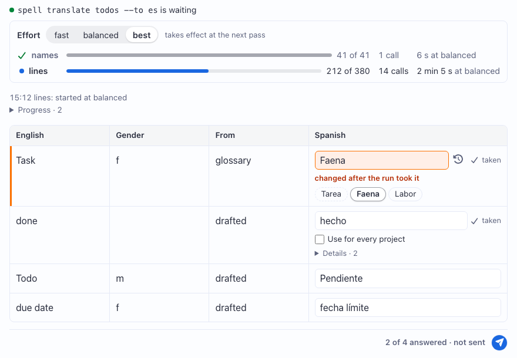

Run Pages: A Command Asks on a Page
A command that needs a person's call (forty names to translate, say) opens a page, keeps working while you answer, and takes each answer as you give it.
epic-engine, 2026-10-23, against the code and its tests (see
Where things are)
A run page lives at /runs/<id>/ on the page server. The command opens it for you, in the
side bar when VS Code is there, else a browser. Top to bottom:
-
Who is waiting.
spell translate todos --to es is waiting, with a green dot, while the command listens. Once it's over, the line says how it ended:The command finished: nobody is waitingThe command stopped: nobody is waitingThe command's wait ran out: nobody is waiting-
and, while the run is open but no command is listening,
Nobody is waiting: the command isn't running
-
The status card, when the command reports passes: a line per pass with its name, a small
bar and
212 of 380, its calls (14 calls) and its time (2 min 5 s at balanced). The running pass is in full ink with a blue dot; done ones are muted, with a green check. - The progress: the command's latest line, and every line folded under it.
- The table: the command's columns, then your answer's, one row per thing it asks. On a phone the answer's column comes first.
-
The Send bar, stuck to the window's bottom:
2 of 4 answered · not sent, the last save, and Send.
The catch: the times on the card move only when the command writes them. A pass that stalls looks frozen, not slow.
Each row's box starts with the command's proposal. Leave it, type over it, or pick one of the pills under it; a tick box, when the command offers one, has the command's own label.
- Typing is saved half a second after you stop; a pick or a tick at once. There's no Save button.
- Anything other than the proposal turns the row orange, typed or picked alike, with a round button that puts the proposal back.
- A row you never touch has no answer saved: the command reads it as its own proposal.
- Send says you're done. Nothing sends by itself, and there's no countdown: the command carries on with exactly what you sent. Send again whenever you like; the page never locks.
Unlike a choice page, which waits for Claude to read it, a run page talks to a process that is RUNNING. The command doesn't have to stop dead until Send: it can work on and take your answers as they arrive.
-
Taken rows. Once the command has acted on a row, the row shows a quiet
✓ takenbeside its box, the time in its tooltip. -
Changed after it was taken. Change a taken row and an orange note says
changed after the run took it. The command is handed the new answer again, and uses it if it still can; a line it already wrote may keep the old one. -
The effort. When the command offers one, the card has a segmented control,
fast | balanced | bestfor the translator's--effort. A pick is saved at once andtakes effect at the next pass: the pass already running keeps its effort, which is why each pass line says what it ranat. Once the run is over, the picker greys out. - Closing the page stops nothing. Everything lives in the run's files, so the page picks the run back up when you open it again, and redraws live as the command writes, with no reload.
Not yet: the page can't stop a run, or rerun one. Stop it where it runs.
The command's side is the kit's SRV.CommandRun. It writes the run's folder, shows the page, and
hands the answers back; the page and its routes are spell-epic's, and the command never touches them. The
walk-through, with both shapes of a run (wait for Send, or run on and be steered), is the kit's
README-server, "Command runs".
const run = SRV.CommandRun.open({ ...asked, effort: { choices: ["fast", "balanced", "best"], initial: "balanced" } })
const answering = (async () => {
for await (const { rowId, answer } of run.answersAsTheyCome()) { // until Send, or 4 hours
use(rowId, answer.value)
run.take(rowId) // the page shows the row taken
}
})()
for (const name of ["names", "lines"]) {
run.startPass(name, { total: rows.length }) // stamped with run.effort, now
rows.forEach((row, done) => {
work(row, run.effort)
run.updatePass({ done: done + 1 }) // written at most 4 times a second
})
run.endPass()
}
await answering
run.finish() // or "stopped", "timed-out"A run is one folder of the content folder, pages/runs/<id>/, three files:
| File | Who writes it | What's in it |
|---|---|---|
run.json5 |
the command |
the title, columns and rows; progress lines; passes, effort (its choices),
taken (row id to time); status
|
answers.json5
|
the page's routes | each row's answer as it's given, effort as picked, sent at Send |
waiting.json5
|
the command | a heartbeat every 30s while it listens: the green dot, stale after 90s |
The routes the page uses, every write under the file's lock so the command never reads half a file:
| Route | What it does |
|---|---|
GET /runs/<id>/ |
the page, titled with the run's title |
GET /api/runs/<id> |
{ page, answers, waiting } |
POST /api/runs/<id>/answer |
one row's answer, { rowId, outcome, value, ticked } |
POST /api/runs/<id>/effort |
the effort, { effort }; 400 unless it's one of the run's choices |
POST /api/runs/<id>/send |
Send: stamps sent, afresh each time |
The edge: a run id is [a-z0-9-] only, and the routes refuse any row the run doesn't have. An
effort the command doesn't offer never reaches it.
| What | Where |
|---|---|
| the contract between the two sides |
src/server/runs/runs.types.ts
(the kit)
|
the command's side, SRV.CommandRun |
src/server/runs/CommandRun.ts
(the kit)
|
| the page's template |
spell-epic/src/tools/templates/run.html
|
| the routes |
spell-epic/src/tools/runRoutes.ts
|
the page's answers, saving and live reads (RunForm) |
spell-epic/src/answers/RunForm.ts
|
| the elements |
spell-epic/src/components/epic-run/,
spell-epic/src/components/epic-run-row/; their Epic UI pages, <epic-run> and <epic-run-row>
|
| open a run's page by hand | epic pages open <run folder> --review |
-
2026-10-23, epic
epic-engineP23: run pages, answers saved as given, Send (Owen's request r18, for the Spanish translator). - 2026-10-23, P25: live steering, Owen's answer to Q10: the status card, the effort picker, taken rows, how a run ended.